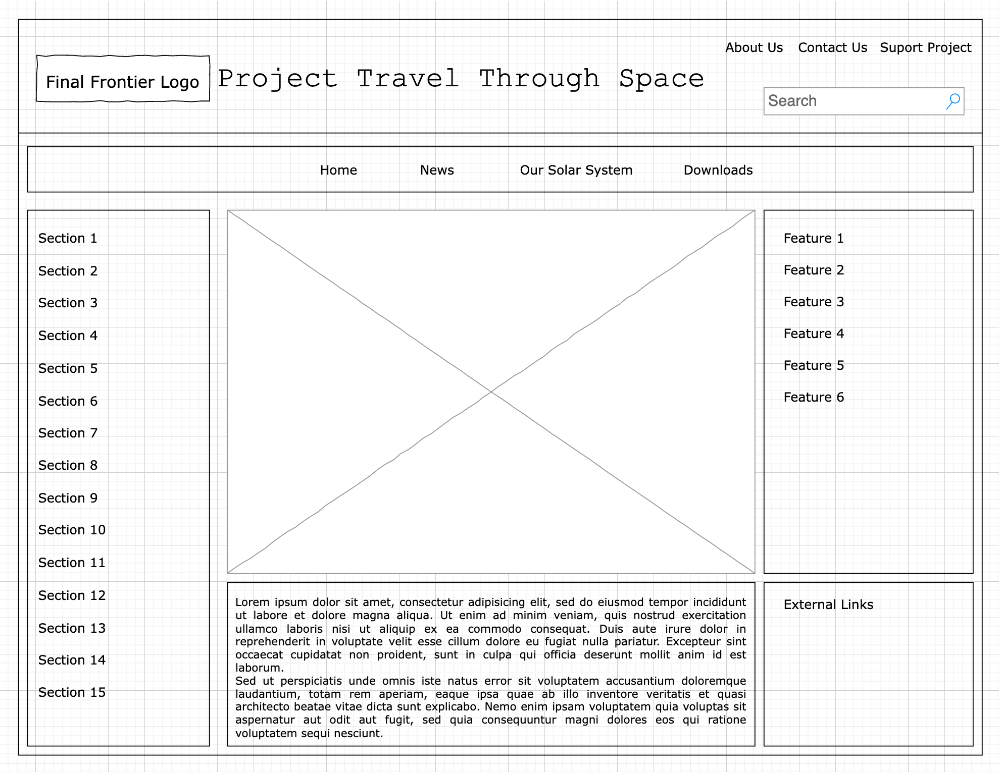
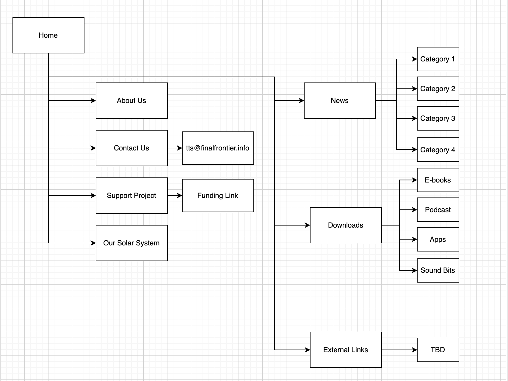

Project Design
Project Travel Through Space (Work in progress)
Project Overview
With Project Travel Through Space my client intends to create a webpage primarily focused on space exploration. They hope this will allow the youth to get insight into astronomy and many of the wonders within our universe. The intended users are primarily youth but are not limitied to them as Project Travel Through Space hopes to spread this knowledge to anyone willing to seek it. It will contain information about our solar system and hope to expand even further beyond...
Client Info
Organization: Final Frontier
Name: Anna Hull
Email: -
Phone: [private]
Wireframe
Sitemap
Page Design
Home: Contains a cycling slideshow of various images at the center and some general info below that. It will also contain information about other stuff yet to be decided. The page will also link back to other pages. Form is subject to change
About Us: Information about the both the project initiative and the organization. Introduces who is in charge of this initiative.
Contact Us: Form to contact the organization with anything users want to mention.
Support Project: Page that will direct users to various methods for them to support the project
Our Solar System: Section of page that allows users to get a tour of the solar system through an interactive format.
News: Links to various current day articles within the astronomy world.
Downloads: Various informative medias to further aid in those curious about the subject matter. Links and provides synopsis of said resources.
Dynamic Functionality
For this project there will be a large amount of JavaScript needed. The largest one being the Our Solar System interactive tour. The hope is that by scrolling and clicking will greatly affect what is seen on the screen. Another is the slideshow style representation of news article and other images. These are the primary one though there may be other smaller implementations.